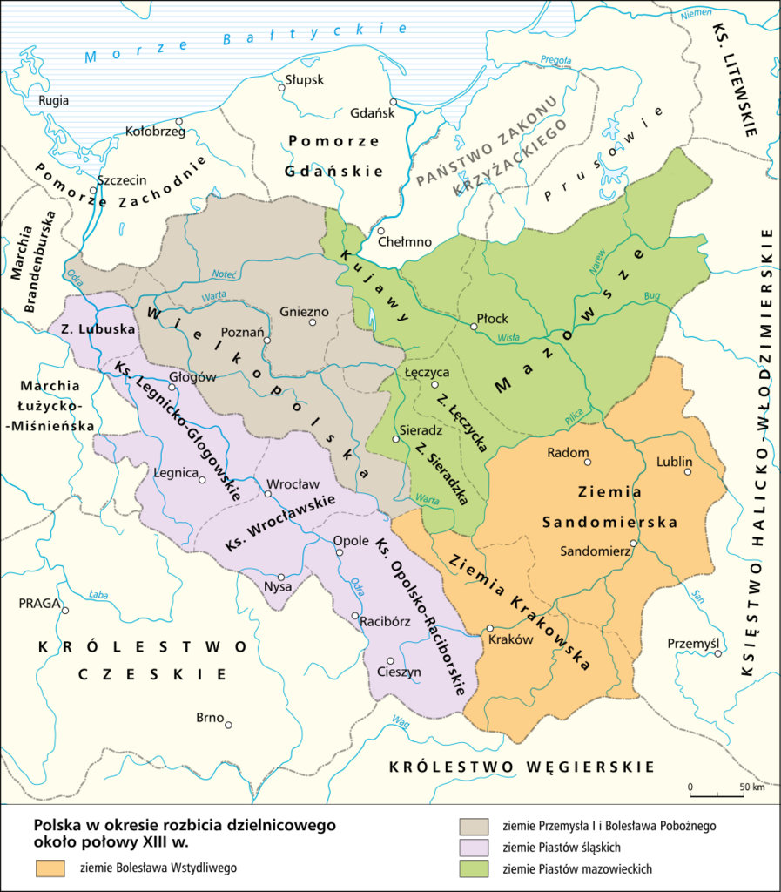

Mapy Mapa Polski 1138 r. z podziałem na dzielnice Polska Kazimierza II Sprawiedliwego  Polska w okresie rozbicia dzielnicowego około połowy XII w. Ziemie polskie w latach 1275-1300 Polska za panowania Władysława Łokietka